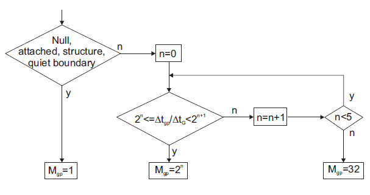

动力公式
动力时间步
有限差分公式与理论背景（Theoretical Background）中所述相同，区别在于网格点处采用“真实”质量，而不是静力求解方案中为使收敛最优而采用的虚拟质量。每个四面体子网格将其质量的四分之一（由网格单元密度和面积计算）贡献给与其关联的四个网格点中的每一个。对于包含两个叠合层的八节点网格单元，最终的网格点质量再除以二。用有限元术语来说，FLAC3D 采用集中质量和对角质量矩阵。
临界时步的计算与理论背景（Theoretical Background）中给出的一致：
其中 \(C_p\) 是 \(p\) 波波速，\(V\) 是四面体子网格的体积，\(A_{\rm max}^{f}\) 是与该四面体子网格关联的最大面面积。min {} 函数在所有网格单元上取值，并包括来自结构单元模块和接触面模块的贡献。采用 0.5 的安全系数，因为方程(1)仅是临界时步的估计值。因此，在不使用刚度比例阻尼时，动力计算所用的时步 \(\Delta t_d\) 为
若使用刚度比例阻尼（见瑞利阻尼（Rayleigh Damping）），为保证稳定性必须减小时间步。Belytschko（1983）给出了计入刚度比例阻尼影响的临界时步 \(\Delta t_\beta\) 公式：
其中 \(\omega_{\rm max}\) 是系统的最高特征频率，\(\lambda\) 是该频率处的临界阻尼分数。由于不进行特征值求解，\(\omega_{\rm max}\) 和 \(\lambda\) 均在 FLAC3D 中估算。估算方式为
给定
其中 \(\xi_{\min}\) 和 \(\omega_{\min}\) 是为瑞利阻尼指定的阻尼分数和角频率（见瑞利阻尼（Rayleigh Damping））。若刚度比例阻尼生效，则所得的 \(\Delta t_\beta\) 值用作动力时步。
动力多步计算
动力分析的最大稳定时步由模型中最大的材料刚度和最小的网格单元决定（见方程(1)）。模型中的刚度和网格单元尺寸常常变化很大（例如位于软土中的细网格混凝土结构）。于是，少数网格单元就决定了动力分析的临界时步，尽管模型的大部分可以按大得多的时步计算。
FLAC3D 中提供了一种称为动力多步计算的方法，以减少动力计算所需的计算时间。在该方法中，模型中的网格单元和网格点按最大时步相近的原则划分为若干类别。各类别按其自身的时步计算，信息在适当时刻在网格单元之间传递。
动力多步计算对每个网格点和网格单元使用局部时步。分析开始时扫描网格，确定并存储每个网格点的局部稳定时步 \(\Delta t_{gp}\)。\(\Delta t_{gp}\) 的值取决于相邻子网格的尺寸、刚度和质量（如方程(1)所示），以及所附着的结构单元和接触面。全局时步 \(\Delta t_{G}\) 取所有 \(\Delta t_{gp}\) 中的最小值，与标准公式相同。
然后按 图 1（Figure 1） 中流程图所示的算法，为每个网格点确定相对于全局时步的整数乘数 \(M_{gp}\)。该算法确保乘数为 2 的幂。在当前的实现中，对于被赋予空材料模型、连接到结构单元、附着于其他网格点或属于安静边界的节点，\(M_{gp}\) 设为 1。随后扫描所有网格单元，每个网格单元的整数乘数 \(M_{z}\) 取周围四个网格点乘数的最小值。

图 1：确定网格点乘数 \(M_{gp}\) 的流程图。
网格单元的计算（即由周围网格点速度导出新的应力；由应力分量累积网格点力之和）仅每隔 \(M_{z}\) 个时步进行一次。在所有涉及时步的表达式中，全局时步由 \(\Delta t_{G}\) \(M_{z}\) 替代。
网格点的计算（即由网格点力之和导出新的速度和位移）仅每隔 \(M_{gp}\) 个时步进行一次；否则，力之和被重置为零，这通常在每次运动计算之后进行。在所有涉及时步的表达式中，全局时步由 \(\Delta t_{G}\) \(M_{gp}\) 替代。
上述规定的效果是跳过对选定网格点和网格单元的计算，从而加快整体计算。使用网格点乘数和网格单元乘数（分别为 \(M_{gp}\) 和 \(M_{z}\)）可确保以下特性：
- 每个网格点处的力之和由各相连网格单元在同一时刻存在的分力组成。分力的同时性由乘数为 2 的幂这一点来保证。任意整数乘数则不具有该特性。
- 网格单元所“看到”的速度（在周围四个网格点处）在网格单元更新之间不更新。这由网格单元乘数取周围网格点乘数最小值这一点来保证。由于应力增量由应变增量和位移增量导出，即使网格点的更新频率低于网格单元，网格单元的每次更新都会感受到网格点的位移贡献。实质上，网格点的总位移增量被分成 \(M_{gp}/M_{z}\) 等份。
对于所表示的波频率远低于各单元固有频率的动力模拟，该方案是准确的。该条件通常由波长准则 \(\Delta l \le {\lambda / 10}\) 保证，其说明见波传播的精度（Accurate Wave Propagation）。对于更高的频率，一般认为不准确源于这样一个事实：当网格单元乘数不等于网格点乘数时，用于计算应变增量的速度在时间上并非定义于时间区间的中点 \(\Delta t\) 处。这偏离了 FLAC3D 所用中心差分格式的二阶精度。不过，对于模拟的任何部分，都可以通过在有无动力多步计算两种情况下各运行模拟的一小段时间来评估该方案的精度；结果可直接比较。
动力多步计算通过命令 单元动力多步（zone dynamic multi-step） 开启（on） 启用。计算循环开始时，网格单元按不同乘数类别的划分将打印到屏幕上。动力多步计算对计算速度的影响取决于模型（即具有高乘数的网格单元越多，速度提升越大）。
以下示例说明了动力多步计算的效果：
多步计算乘数可作为网格单元上的标签图绘制；网格点乘数可绘制为云图。
动力多步计算可与结构单元一起使用。
关于动力多步计算的更多信息和应用示例，见 Unterberger、Cundall 和 Zettler（1997）。动力多步计算在隧道内轨道交通引起振动的数值预测中的应用，见 Unterberger、Hochgatterer 和 Poisel（1997）以及 Daller、Unterberger 和 Hochgatterer（1996）。
⇐ Relation to Equivalent-Linear Methods | Shear Wave On Stiff Wall In Soft Soil: Dynamic Multi-Stepping ⇒
| 这些内容对您有帮助吗？… 版权与免责声明 | FLAC3D © 2019, Itasca | 原文更新于 2020 年 10 月 8 日 |